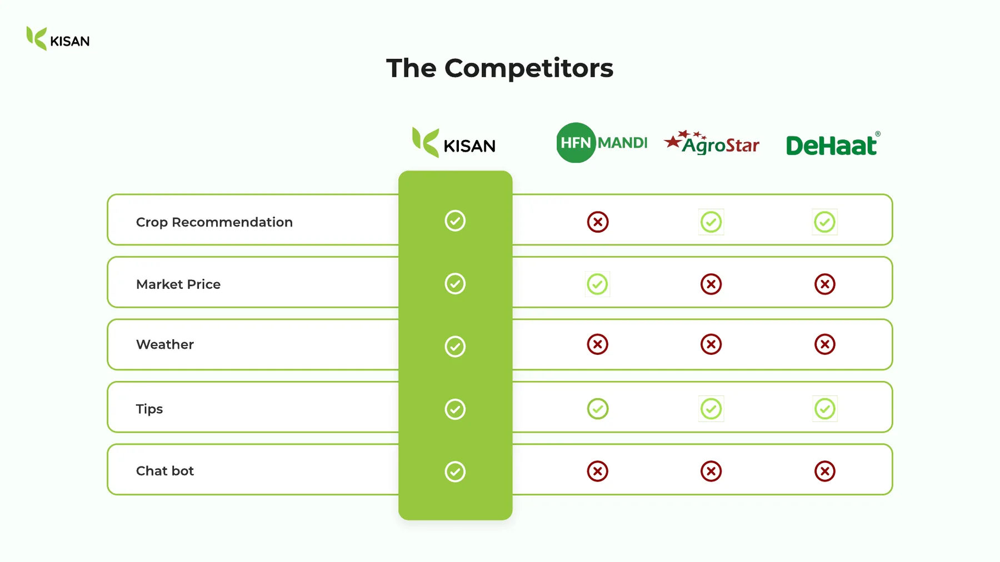
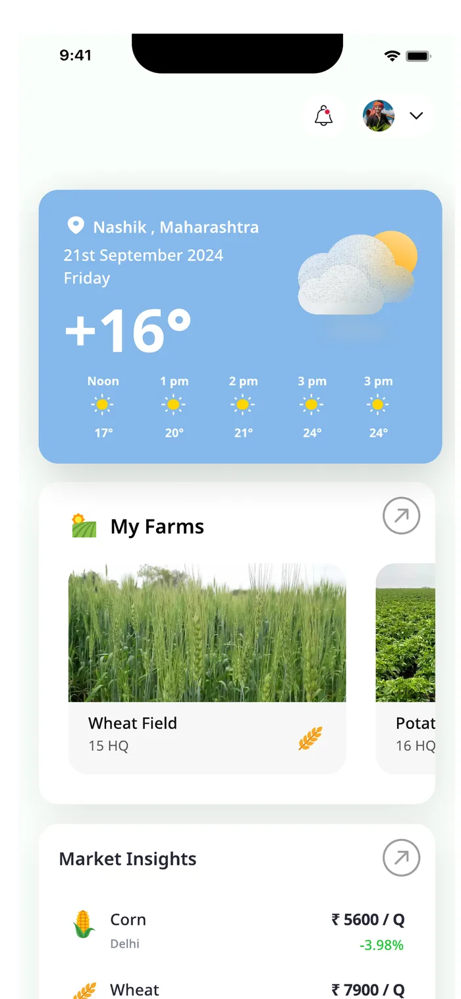
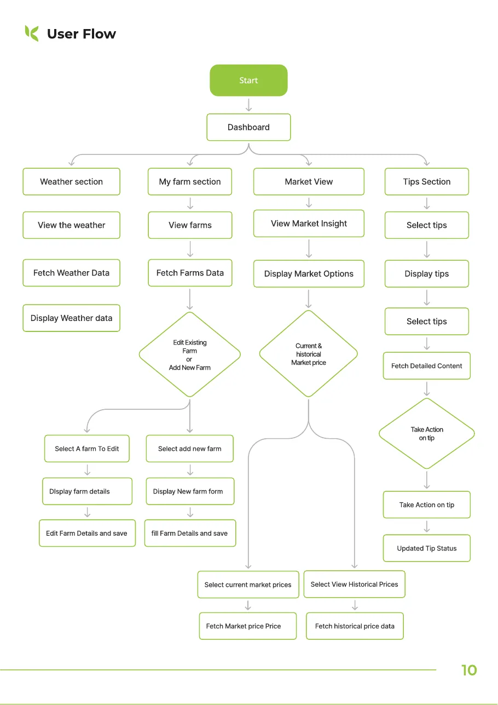

A farming app for Indian farmers: weather, crop advice, market prices and an AI assistant, in 11 regional languages. I was project manager and lead UX designer on an eight-person team.
Context:Langara College team project
My Role:Project manager, lead UX designer
Year:2024
Service Provided:Research, flows, brand to product
The app
Five jobs, one app.
The problem
Unpredictable weather, changing prices, old methods.
Farmers plan crops around weather they can’t predict and sell into prices they can’t see. Most of the tools out there weren’t built for them, or for their language.
Research
We talked to five farmers.
Surveys and interviews pointed at the same problems: weather they couldn’t plan around, no easy way to see market prices, and farm management that felt complex.
“I often struggle to plan my crops with unpredictable weather patterns.”Shubham
“Having clear and accurate market prices would help me sell my produce more confidently.”Ramlal
“I need tools that are simple and easy to use, especially in my regional language.”Bijay
Competitors
Each app covered part of the list.
We compared Kisan with agritech apps like DeHaat and AgroStar on crop advice, market prices, weather, tips and an AI chat. Kisan covers all five.

Language
The first question is which language.
Bijay said it best: simple, and in his own language. So language comes first, before sign-in, with 11 to choose from.
123
Language is the first choice, before sign-in.
Each language shows its own script.
Big tiles and a full-width button.
Onboarding
Set up a farm in two steps.
Dashboard
What a farmer checks every day, on one screen.
Weather for the farm, the farms themselves, crop prices, top-selling crops nearby and a daily tip.

123
Weather for the farm’s location, hour by hour.
The farmer’s own farms, one card each.
Crop prices per quintal, with the recent change.
Flows
Mapped before designed.
We mapped the main journeys from the dashboard first: weather, my farms, market view and tips. Screens came after.

Brand
Two leaves that make a K.
The logo’s two green leaves stand for growth. Noto Sans reads cleanly across the app’s languages, with a palette of deep olive and fresh green.
Components
One kit for four designers and four developers.
My part
Brief, flows, testing and the team.
Wrote the brief
The design brief the whole team worked from.
Led the flows
The main journeys through the app, and the branding.
Tested with farmers
Remote interviews with farmers to check they could find their way around.
Ran the team
Project manager for the eight-person team.
Team Enigma. Design: Mudit Dhangar, Dorsa Ghorbani, Tomohiro Yamamoto, Ali Teimouri. Development: Chitransh Nigam, Shivam Kumar, Prabh Singh, Falguni Saini.
The build
Phone and tablet, built in React.
The developers built it with React, Node, MongoDB and Firebase, with OpenAI behind the assistant.